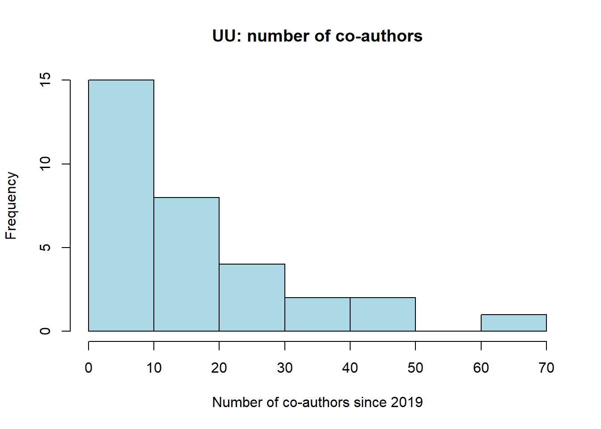
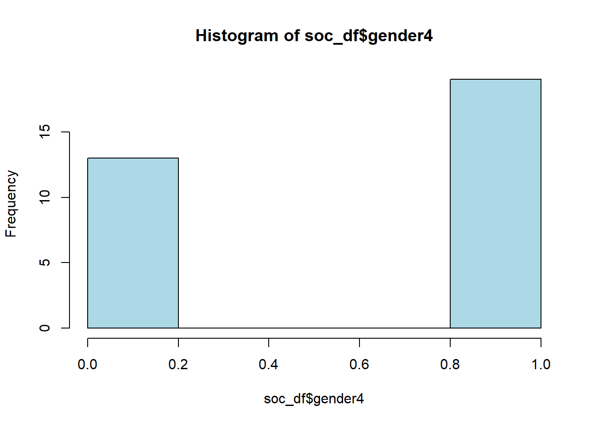
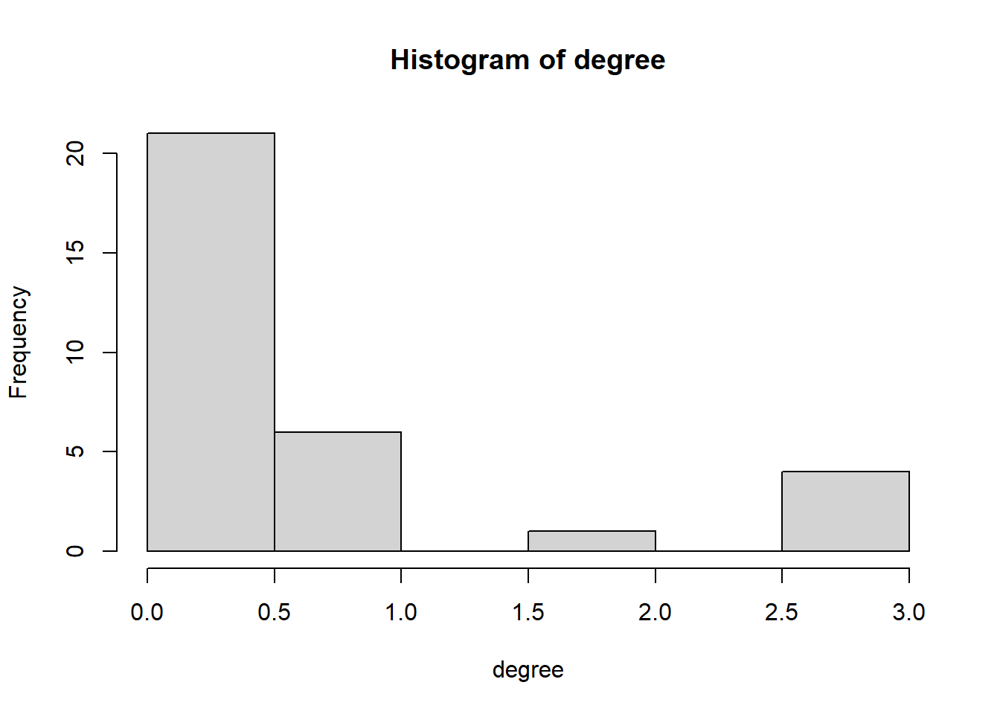
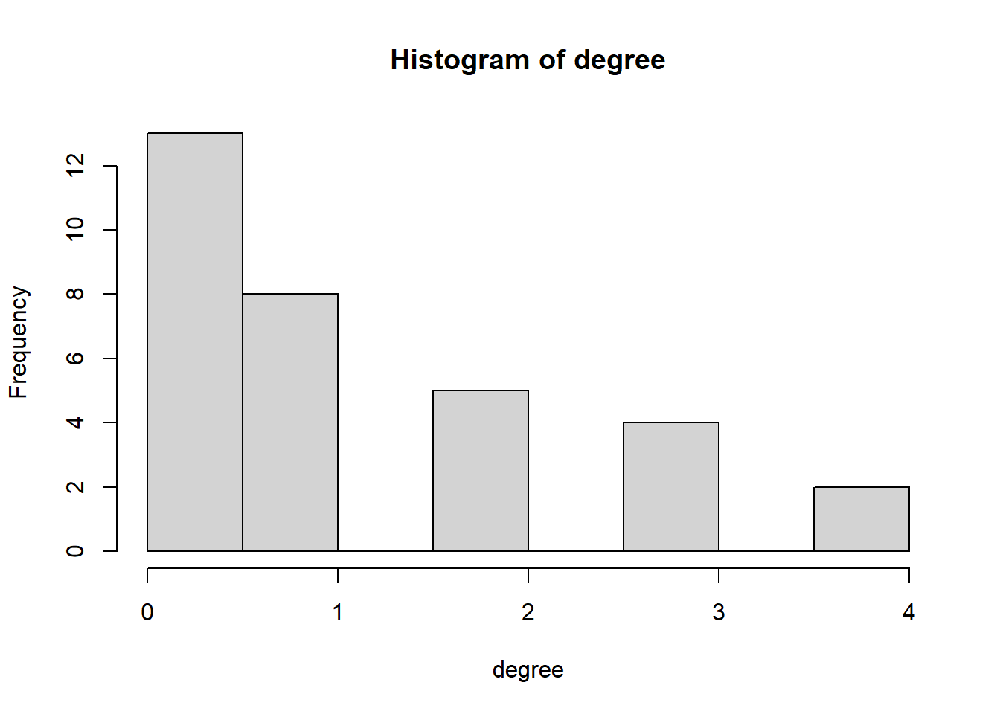
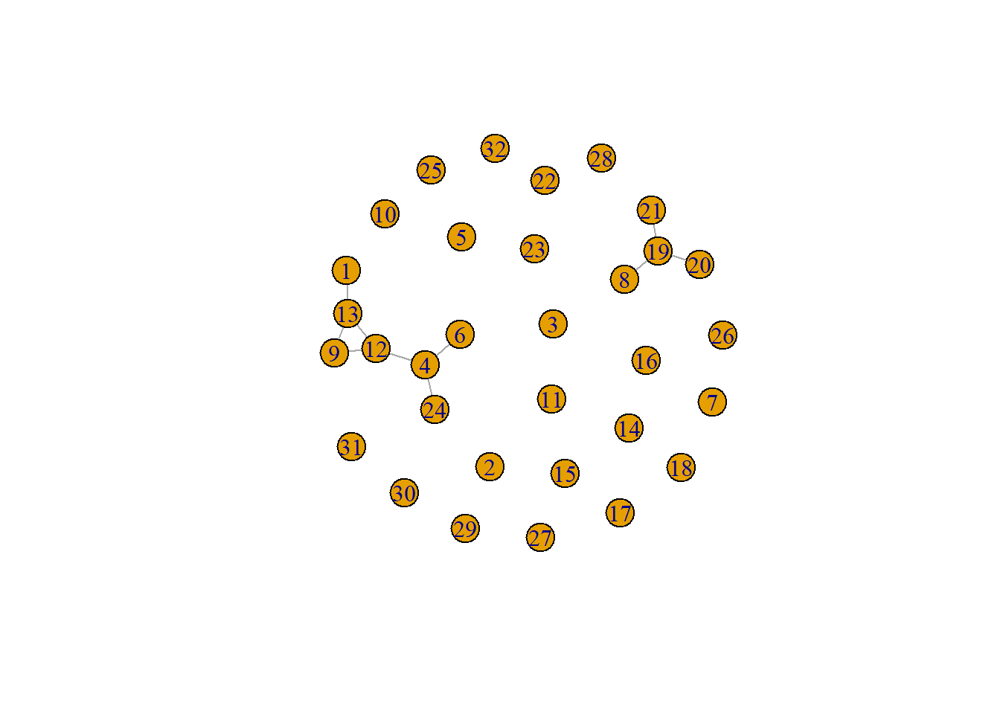
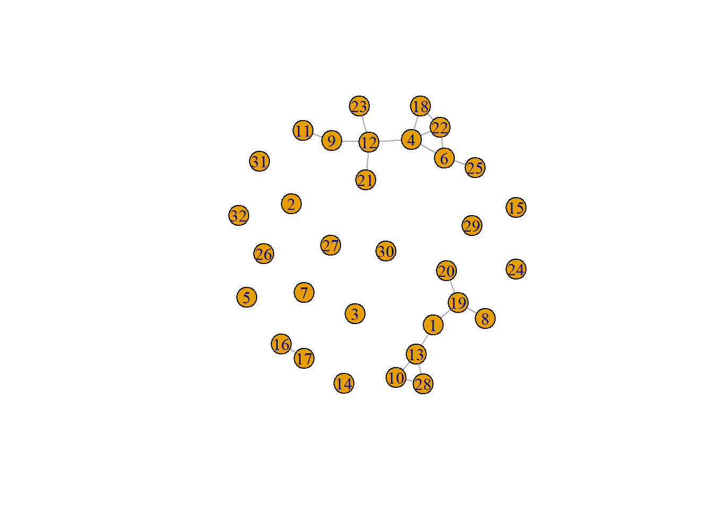

#start with clean workspace
rm(list=ls())
getwd()## [1] "C:/Users/ninab/OneDrive/Documenten/GitHub/labjournal"1 packages
library(data.table)
library(tidyverse) ## ── Attaching packages ─────────────────────────────────────────────────────────── tidyverse 1.3.2 ──
## ✔ ggplot2 3.3.6 ✔ purrr 0.3.4
## ✔ tibble 3.1.8 ✔ dplyr 1.0.10
## ✔ tidyr 1.2.0 ✔ stringr 1.4.1
## ✔ readr 2.1.2 ✔ forcats 0.5.2
## ── Conflicts ────────────────────────────────────────────────────────────── tidyverse_conflicts() ──
## ✖ dplyr::between() masks data.table::between()
## ✖ dplyr::filter() masks stats::filter()
## ✖ dplyr::first() masks data.table::first()
## ✖ dplyr::lag() masks stats::lag()
## ✖ dplyr::last() masks data.table::last()
## ✖ purrr::transpose() masks data.table::transpose()require(stringi)## Loading required package: stringirequire(Rsiena)## Loading required package: Rsiena## Warning in library(package, lib.loc = lib.loc, character.only = TRUE, logical.return = TRUE, : there
## is no package called 'Rsiena'require(igraph)## Loading required package: igraph
##
## Attaching package: 'igraph'
##
## The following objects are masked from 'package:dplyr':
##
## as_data_frame, groups, union
##
## The following objects are masked from 'package:purrr':
##
## compose, simplify
##
## The following object is masked from 'package:tidyr':
##
## crossing
##
## The following object is masked from 'package:tibble':
##
## as_data_frame
##
## The following objects are masked from 'package:stats':
##
## decompose, spectrum
##
## The following object is masked from 'package:base':
##
## union2 Data
#load dataobjects
load("./data/descriptives/UU_net_array_sym.RData")
load("./data/descriptives/UU_dfv2.RData")3 custum functions
# density: observed relations divided by possible relations
fdensity <- function(x) {
# x is your nomination network make sure diagonal cells are NA
diag(x) <- NA
# take care of RSiena structural zeros, set as missing.
x[x == 10] <- NA
sum(x == 1, na.rm = T)/(sum(x == 1 | x == 0, na.rm = T))
}
# calculate intragroup density
fdensityintra <- function(x, A) {
# A is matrix indicating whether nodes in dyad have same node attributes
diag(x) <- NA
x[x == 10] <- NA
diag(A) <- NA
sum(x == 1 & A == 1, na.rm = T)/(sum((x == 1 | x == 0) & A == 1, na.rm = T))
}
# calculate intragroup density
fdensityinter <- function(x, A) {
# A is matrix indicating whether nodes in dyad have same node attributes
diag(x) <- NA
x[x == 10] <- NA
diag(A) <- NA
sum(x == 1 & A != 1, na.rm = T)/(sum((x == 1 | x == 0) & A != 1, na.rm = T))
}
# construct dyadcharacteristic whether nodes are similar/homogenous
fhomomat <- function(x) {
# x is a vector of node-covariate
xmat <- matrix(x, nrow = length(x), ncol = length(x))
xmatt <- t(xmat)
xhomo <- xmat == xmatt
return(xhomo)
}
# a function to calculate all valid dyads.
fndyads <- function(x) {
diag(x) <- NA
x[x == 10] <- NA
(sum((x == 1 | x == 0), na.rm = T))
}
# a function to calculate all valid intragroupdyads.
fndyads2 <- function(x, A) {
diag(x) <- NA
x[x == 10] <- NA
diag(A) <- NA
(sum((x == 1 | x == 0) & A == 1, na.rm = T))
}4 descriptives
soc_df$div.net <- as.numeric(soc_df$div)
summary(soc_df$div.net)## Min. 1st Qu. Median Mean 3rd Qu. Max.
## 0.00 23.96 31.89 36.10 44.11 100.00sd(soc_df$div.net, na.rm=TRUE)## [1] 26.66588table(soc_df$div.net)##
## 0 10 17.86 20.83 25 26.19 28.57 30 31.43 32.35 33.33 36.36 37.7 38.46 42.86 44
## 5 1 1 1 3 1 2 1 1 1 2 1 1 1 1 1
## 44.44 57.14 62.5 76.92 78.05 80 89.47 100
## 1 1 1 1 1 1 1 1hist(soc_df$div.net, col="lightblue", main='UU: ethnic diversity egonets', xlab='Percentage non-Dutch collaborators')
summary(soc_df$div.ego)## Min. 1st Qu. Median Mean 3rd Qu. Max.
## 0.0000 0.0000 1.0000 0.6875 1.0000 1.0000table(soc_df$div.ego)##
## 0 1
## 10 22hist(soc_df$div.ego, col="lightblue")summary(soc_df$nauthors)## Min. 1st Qu. Median Mean 3rd Qu. Max.
## 1.00 5.50 12.00 16.19 24.25 61.00sd(soc_df$nauthors, na.rm=TRUE)## [1] 14.40976hist(soc_df$nauthors, col="lightblue", main='UU: number of co-authors', xlab='Number of co-authors since 2019')
summary(soc_df$pub_first)## Min. 1st Qu. Median Mean 3rd Qu. Max.
## 1976 1997 2010 2006 2016 2022sd(soc_df$pub_first, na.rm=TRUE)## [1] 13.40825hist(soc_df$pub_first, col="lightblue", main='UU: year first publication', xlab='Year first publication')
table(soc_df$gender4)##
## 0 1
## 13 19hist(soc_df$gender4, col="lightblue")
5 degree
5.1 net 1
net1 <- net_soc_array[ ,, 1]
diag(net1) <- 0
degree <- rowSums(net1)
hist(degree)summary(degree)## Min. 1st Qu. Median Mean 3rd Qu. Max.
## 0.0000 0.0000 0.0000 0.5625 1.0000 3.0000sd(degree)## [1] 0.94825825.2 net 2
net2 <- net_soc_array[ ,, 2]
diag(net2) <- 0
degree <- rowSums(net2)
hist(degree)
summary(degree)## Min. 1st Qu. Median Mean 3rd Qu. Max.
## 0.000 0.000 0.000 0.625 1.000 3.000sd(degree)## [1] 1.0395415.3 net 3
net3 <- net_soc_array[ ,, 3]
diag(net3) <- 0
degree <- rowSums(net3)
hist(degree)
summary(degree)## Min. 1st Qu. Median Mean 3rd Qu. Max.
## 0.000 0.000 1.000 1.188 2.000 4.000sd(degree)## [1] 1.2810666 igraph object
6.1 net 1
net1_g <- igraph::graph_from_adjacency_matrix(net1, mode = c("undirected"))
plot(net1_g)
igraph::degree(net1_g)## [1] 1 0 0 2 0 2 0 0 2 0 0 3 3 0 0 0 0 0 1 0 1 0 0 1 0 0 0 0 2 0 0 0igraph::dyad.census(net1_g)## $mut
## [1] 9
##
## $asym
## [1] 0
##
## $null
## [1] 487igraph::triad.census(net1_g)## Warning in igraph::triad.census(net1_g): At core/misc/motifs.c:1165 : Triad census called on an
## undirected graph.## [1] 4699 0 253 0 0 0 0 0 0 0 7 0 0 0 0 1igraph::edge_density(net1_g)## [1] 0.01814516sum(igraph::degree(net1_g))## [1] 186.2 net 2
net2_g <- igraph::graph_from_adjacency_matrix(net2, mode = c("undirected"))
plot(net2_g)
igraph::degree(net2_g)## [1] 1 0 0 3 0 1 0 1 2 0 0 3 3 0 0 0 0 0 3 1 1 0 0 1 0 0 0 0 0 0 0 0igraph::dyad.census(net2_g)## $mut
## [1] 10
##
## $asym
## [1] 0
##
## $null
## [1] 486igraph::triad.census(net2_g)## Warning in igraph::triad.census(net2_g): At core/misc/motifs.c:1165 : Triad census called on an
## undirected graph.## [1] 4672 0 277 0 0 0 0 0 0 0 10 0 0 0 0 1igraph::edge_density(net2_g)## [1] 0.02016129sum(igraph::degree(net2_g))## [1] 206.3 net 3
net3_g <- igraph::graph_from_adjacency_matrix(net3, mode = c("undirected"))
plot(net3_g)
igraph::degree(net3_g)## [1] 2 0 0 4 0 3 0 1 2 2 1 4 3 0 0 1 1 2 3 1 1 3 1 0 1 0 0 2 0 0 0 0igraph::dyad.census(net3_g)## $mut
## [1] 19
##
## $asym
## [1] 0
##
## $null
## [1] 477igraph::triad.census(net3_g)## Warning in igraph::triad.census(net3_g): At core/misc/motifs.c:1165 : Triad census called on an
## undirected graph.## [1] 4416 0 521 0 0 0 0 0 0 0 20 0 0 0 0 3igraph::edge_density(net3_g)## [1] 0.03830645sum(igraph::degree(net3_g))## [1] 387 density
7.1 net 1
net_und <- net1 + t(net1)
net_und[net_und==2] <- 1
sum(net_und, na.rm=TRUE)## [1] 18fdensity(net1)## [1] 0.018145167.2 net 2
net_und <- net2 + t(net2)
net_und[net_und==2] <- 1
sum(net_und, na.rm=TRUE)## [1] 20fdensity(net2)## [1] 0.020161297.3 net 3
net_und <- net3 + t(net3)
net_und[net_und==2] <- 1
sum(net_und, na.rm=TRUE)## [1] 38fdensity(net3)## [1] 0.038306458 inter-/intragroup density
div_m <- fhomomat(soc_df$div.ego)# calculate intra-/intergroup density diversity ego
fdensityintra(x=net_und, A=div_m) ## [1] 0.05072464fdensityinter(x=net_und, A=div_m)## [1] 0.02272727# calculate intra-/intergroup density gender
gender_m <- fhomomat(soc_df$gender4)
fdensityintra(x=net_und, A=gender_m) ## [1] 0.04417671fdensityinter(x=net_und, A=gender_m)## [1] 0.03238866DQpgYGB7cn0NCiNzdGFydCB3aXRoIGNsZWFuIHdvcmtzcGFjZSANCnJtKGxpc3Q9bHMoKSkNCmdldHdkKCkNCmBgYA0KDQojIHBhY2thZ2VzDQoNCmBgYHtyfQ0KbGlicmFyeShkYXRhLnRhYmxlKSANCmxpYnJhcnkodGlkeXZlcnNlKSANCnJlcXVpcmUoc3RyaW5naSkNCnJlcXVpcmUoUnNpZW5hKQ0KcmVxdWlyZShpZ3JhcGgpDQoNCmBgYA0KIyBEYXRhDQoNCmBgYHtyfQ0KI2xvYWQgZGF0YW9iamVjdHMNCmxvYWQoIi4vZGF0YS9kZXNjcmlwdGl2ZXMvVVVfbmV0X2FycmF5X3N5bS5SRGF0YSIpDQpsb2FkKCIuL2RhdGEvZGVzY3JpcHRpdmVzL1VVX2RmdjIuUkRhdGEiKQ0KYGBgDQoNCg0KIyBjdXN0dW0gZnVuY3Rpb25zDQoNCmBgYHtyfQ0KIyBkZW5zaXR5OiBvYnNlcnZlZCByZWxhdGlvbnMgZGl2aWRlZCBieSBwb3NzaWJsZSByZWxhdGlvbnMNCmZkZW5zaXR5IDwtIGZ1bmN0aW9uKHgpIHsNCiAgICAjIHggaXMgeW91ciBub21pbmF0aW9uIG5ldHdvcmsgbWFrZSBzdXJlIGRpYWdvbmFsIGNlbGxzIGFyZSBOQQ0KICAgIGRpYWcoeCkgPC0gTkENCiAgICAjIHRha2UgY2FyZSBvZiBSU2llbmEgc3RydWN0dXJhbCB6ZXJvcywgc2V0IGFzIG1pc3NpbmcuDQogICAgeFt4ID09IDEwXSA8LSBOQQ0KICAgIHN1bSh4ID09IDEsIG5hLnJtID0gVCkvKHN1bSh4ID09IDEgfCB4ID09IDAsIG5hLnJtID0gVCkpDQp9DQoNCiMgY2FsY3VsYXRlIGludHJhZ3JvdXAgZGVuc2l0eQ0KZmRlbnNpdHlpbnRyYSA8LSBmdW5jdGlvbih4LCBBKSB7DQogICAgIyBBIGlzIG1hdHJpeCBpbmRpY2F0aW5nIHdoZXRoZXIgbm9kZXMgaW4gZHlhZCBoYXZlIHNhbWUgbm9kZSBhdHRyaWJ1dGVzDQogICAgZGlhZyh4KSA8LSBOQQ0KICAgIHhbeCA9PSAxMF0gPC0gTkENCiAgICBkaWFnKEEpIDwtIE5BDQogICAgc3VtKHggPT0gMSAmIEEgPT0gMSwgbmEucm0gPSBUKS8oc3VtKCh4ID09IDEgfCB4ID09IDApICYgQSA9PSAxLCBuYS5ybSA9IFQpKQ0KfQ0KDQojIGNhbGN1bGF0ZSBpbnRyYWdyb3VwIGRlbnNpdHkNCmZkZW5zaXR5aW50ZXIgPC0gZnVuY3Rpb24oeCwgQSkgew0KICAgICMgQSBpcyBtYXRyaXggaW5kaWNhdGluZyB3aGV0aGVyIG5vZGVzIGluIGR5YWQgaGF2ZSBzYW1lIG5vZGUgYXR0cmlidXRlcw0KICAgIGRpYWcoeCkgPC0gTkENCiAgICB4W3ggPT0gMTBdIDwtIE5BDQogICAgZGlhZyhBKSA8LSBOQQ0KICAgIHN1bSh4ID09IDEgJiBBICE9IDEsIG5hLnJtID0gVCkvKHN1bSgoeCA9PSAxIHwgeCA9PSAwKSAmIEEgIT0gMSwgbmEucm0gPSBUKSkNCn0NCg0KIyBjb25zdHJ1Y3QgZHlhZGNoYXJhY3RlcmlzdGljIHdoZXRoZXIgbm9kZXMgYXJlIHNpbWlsYXIvaG9tb2dlbm91cw0KZmhvbW9tYXQgPC0gZnVuY3Rpb24oeCkgew0KICAgICMgeCBpcyBhIHZlY3RvciBvZiBub2RlLWNvdmFyaWF0ZQ0KICAgIHhtYXQgPC0gbWF0cml4KHgsIG5yb3cgPSBsZW5ndGgoeCksIG5jb2wgPSBsZW5ndGgoeCkpDQogICAgeG1hdHQgPC0gdCh4bWF0KQ0KICAgIHhob21vIDwtIHhtYXQgPT0geG1hdHQNCiAgICByZXR1cm4oeGhvbW8pDQp9DQoNCiMgYSBmdW5jdGlvbiB0byBjYWxjdWxhdGUgYWxsIHZhbGlkIGR5YWRzLg0KZm5keWFkcyA8LSBmdW5jdGlvbih4KSB7DQogICAgZGlhZyh4KSA8LSBOQQ0KICAgIHhbeCA9PSAxMF0gPC0gTkENCiAgICAoc3VtKCh4ID09IDEgfCB4ID09IDApLCBuYS5ybSA9IFQpKQ0KfQ0KDQojIGEgZnVuY3Rpb24gdG8gY2FsY3VsYXRlIGFsbCB2YWxpZCBpbnRyYWdyb3VwZHlhZHMuDQpmbmR5YWRzMiA8LSBmdW5jdGlvbih4LCBBKSB7DQogICAgZGlhZyh4KSA8LSBOQQ0KICAgIHhbeCA9PSAxMF0gPC0gTkENCiAgICBkaWFnKEEpIDwtIE5BDQogICAgKHN1bSgoeCA9PSAxIHwgeCA9PSAwKSAmIEEgPT0gMSwgbmEucm0gPSBUKSkNCn0NCg0KDQoNCmBgYA0KDQoNCiMgZGVzY3JpcHRpdmVzDQoNCmBgYHtyfQ0KDQoNCnNvY19kZiRkaXYubmV0IDwtIGFzLm51bWVyaWMoc29jX2RmJGRpdikNCg0Kc3VtbWFyeShzb2NfZGYkZGl2Lm5ldCkNCnNkKHNvY19kZiRkaXYubmV0LCBuYS5ybT1UUlVFKQ0KdGFibGUoc29jX2RmJGRpdi5uZXQpDQpoaXN0KHNvY19kZiRkaXYubmV0LCBjb2w9ImxpZ2h0Ymx1ZSIsIG1haW49J1VVOiBldGhuaWMgZGl2ZXJzaXR5IGVnb25ldHMnLCB4bGFiPSdQZXJjZW50YWdlIG5vbi1EdXRjaCBjb2xsYWJvcmF0b3JzJykNCmBgYA0KDQpgYGB7cn0NCnN1bW1hcnkoc29jX2RmJGRpdi5lZ28pDQp0YWJsZShzb2NfZGYkZGl2LmVnbykNCmhpc3Qoc29jX2RmJGRpdi5lZ28sIGNvbD0ibGlnaHRibHVlIikNCg0KYGBgDQoNCmBgYHtyfQ0Kc3VtbWFyeShzb2NfZGYkbmF1dGhvcnMpDQpzZChzb2NfZGYkbmF1dGhvcnMsIG5hLnJtPVRSVUUpDQpoaXN0KHNvY19kZiRuYXV0aG9ycywgY29sPSJsaWdodGJsdWUiLCBtYWluPSdVVTogbnVtYmVyIG9mIGNvLWF1dGhvcnMnLCB4bGFiPSdOdW1iZXIgb2YgY28tYXV0aG9ycyBzaW5jZSAyMDE5JykNCg0KYGBgDQoNCmBgYHtyfQ0Kc3VtbWFyeShzb2NfZGYkcHViX2ZpcnN0KQ0Kc2Qoc29jX2RmJHB1Yl9maXJzdCwgbmEucm09VFJVRSkNCmhpc3Qoc29jX2RmJHB1Yl9maXJzdCwgY29sPSJsaWdodGJsdWUiLCBtYWluPSdVVTogeWVhciBmaXJzdCBwdWJsaWNhdGlvbicsIHhsYWI9J1llYXIgZmlyc3QgcHVibGljYXRpb24nKQ0KDQpgYGANCg0KYGBge3J9DQoNCnRhYmxlKHNvY19kZiRnZW5kZXI0KQ0KaGlzdChzb2NfZGYkZ2VuZGVyNCwgY29sPSJsaWdodGJsdWUiKQ0KDQpgYGANCg0KIyBkZWdyZWUNCiMjIG5ldCAxDQoNCg0KYGBge3J9DQpuZXQxIDwtIG5ldF9zb2NfYXJyYXlbICwsIDFdDQpkaWFnKG5ldDEpIDwtIDANCmRlZ3JlZSA8LSByb3dTdW1zKG5ldDEpDQpoaXN0KGRlZ3JlZSkNCnN1bW1hcnkoZGVncmVlKQ0Kc2QoZGVncmVlKQ0KDQpgYGANCg0KIyMgbmV0IDINCmBgYHtyfQ0KbmV0MiA8LSBuZXRfc29jX2FycmF5WyAsLCAyXQ0KZGlhZyhuZXQyKSA8LSAwDQpkZWdyZWUgPC0gcm93U3VtcyhuZXQyKQ0KaGlzdChkZWdyZWUpDQpzdW1tYXJ5KGRlZ3JlZSkNCnNkKGRlZ3JlZSkNCg0KYGBgDQoNCg0KIyMgbmV0IDMNCg0KYGBge3J9DQpuZXQzIDwtIG5ldF9zb2NfYXJyYXlbICwsIDNdDQpkaWFnKG5ldDMpIDwtIDANCmRlZ3JlZSA8LSByb3dTdW1zKG5ldDMpDQpoaXN0KGRlZ3JlZSkNCnN1bW1hcnkoZGVncmVlKQ0Kc2QoZGVncmVlKQ0KDQpgYGANCg0KDQojIGlncmFwaCBvYmplY3QgDQojIyBuZXQgMQ0KDQpgYGB7cn0NCm5ldDFfZyA8LSBpZ3JhcGg6OmdyYXBoX2Zyb21fYWRqYWNlbmN5X21hdHJpeChuZXQxLCBtb2RlID0gYygidW5kaXJlY3RlZCIpKQ0KcGxvdChuZXQxX2cpDQoNCmlncmFwaDo6ZGVncmVlKG5ldDFfZykNCmlncmFwaDo6ZHlhZC5jZW5zdXMobmV0MV9nKQ0KaWdyYXBoOjp0cmlhZC5jZW5zdXMobmV0MV9nKQ0KaWdyYXBoOjplZGdlX2RlbnNpdHkobmV0MV9nKQ0KDQpzdW0oaWdyYXBoOjpkZWdyZWUobmV0MV9nKSkNCg0KYGBgDQoNCiMjIG5ldCAyDQoNCmBgYHtyfQ0KbmV0Ml9nIDwtIGlncmFwaDo6Z3JhcGhfZnJvbV9hZGphY2VuY3lfbWF0cml4KG5ldDIsIG1vZGUgPSBjKCJ1bmRpcmVjdGVkIikpDQpwbG90KG5ldDJfZykNCg0KaWdyYXBoOjpkZWdyZWUobmV0Ml9nKQ0KaWdyYXBoOjpkeWFkLmNlbnN1cyhuZXQyX2cpDQppZ3JhcGg6OnRyaWFkLmNlbnN1cyhuZXQyX2cpDQppZ3JhcGg6OmVkZ2VfZGVuc2l0eShuZXQyX2cpDQoNCnN1bShpZ3JhcGg6OmRlZ3JlZShuZXQyX2cpKQ0KDQpgYGANCg0KIyMgbmV0IDMNCmBgYHtyfQ0KbmV0M19nIDwtIGlncmFwaDo6Z3JhcGhfZnJvbV9hZGphY2VuY3lfbWF0cml4KG5ldDMsIG1vZGUgPSBjKCJ1bmRpcmVjdGVkIikpDQpwbG90KG5ldDNfZykNCg0KaWdyYXBoOjpkZWdyZWUobmV0M19nKQ0KaWdyYXBoOjpkeWFkLmNlbnN1cyhuZXQzX2cpDQppZ3JhcGg6OnRyaWFkLmNlbnN1cyhuZXQzX2cpDQppZ3JhcGg6OmVkZ2VfZGVuc2l0eShuZXQzX2cpDQoNCnN1bShpZ3JhcGg6OmRlZ3JlZShuZXQzX2cpKQ0KDQpgYGANCiMgZGVuc2l0eQ0KIyMgbmV0IDENCmBgYHtyfQ0KDQpuZXRfdW5kIDwtIG5ldDEgKyB0KG5ldDEpDQpuZXRfdW5kW25ldF91bmQ9PTJdIDwtIDENCg0Kc3VtKG5ldF91bmQsIG5hLnJtPVRSVUUpDQpmZGVuc2l0eShuZXQxKQ0KYGBgDQojIyBuZXQgMg0KYGBge3J9DQoNCm5ldF91bmQgPC0gbmV0MiArIHQobmV0MikNCm5ldF91bmRbbmV0X3VuZD09Ml0gPC0gMQ0KDQpzdW0obmV0X3VuZCwgbmEucm09VFJVRSkNCmZkZW5zaXR5KG5ldDIpDQpgYGANCiMjIG5ldCAzDQpgYGB7cn0NCg0KbmV0X3VuZCA8LSBuZXQzICsgdChuZXQzKQ0KbmV0X3VuZFtuZXRfdW5kPT0yXSA8LSAxDQoNCnN1bShuZXRfdW5kLCBuYS5ybT1UUlVFKQ0KZmRlbnNpdHkobmV0MykNCmBgYA0KDQojIGludGVyLS9pbnRyYWdyb3VwIGRlbnNpdHkNCg0KYGBge3J9DQpkaXZfbSA8LSAgZmhvbW9tYXQoc29jX2RmJGRpdi5lZ28pDQpgYGANCg0KDQpgYGB7cn0NCiMgY2FsY3VsYXRlIGludHJhLS9pbnRlcmdyb3VwIGRlbnNpdHkgZGl2ZXJzaXR5IGVnbw0KZmRlbnNpdHlpbnRyYSh4PW5ldF91bmQsIEE9ZGl2X20pIA0KZmRlbnNpdHlpbnRlcih4PW5ldF91bmQsIEE9ZGl2X20pDQogICAgDQpgYGANCg0KYGBge3J9DQojIGNhbGN1bGF0ZSBpbnRyYS0vaW50ZXJncm91cCBkZW5zaXR5IGdlbmRlcg0KZ2VuZGVyX20gPC0gIGZob21vbWF0KHNvY19kZiRnZW5kZXI0KQ0KZmRlbnNpdHlpbnRyYSh4PW5ldF91bmQsIEE9Z2VuZGVyX20pIA0KZmRlbnNpdHlpbnRlcih4PW5ldF91bmQsIEE9Z2VuZGVyX20pDQogICAgDQpgYGANCg0KDQo=